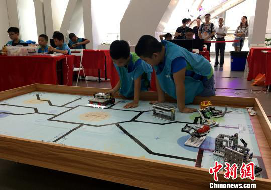
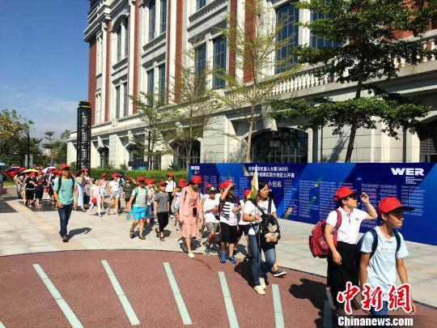

中新网厦门8月5日电 (杨伏山 滕钦祥)世界教育机器人大赛(WER)2018赛季中国赛区南方地区公开赛，5日在厦门万舜·诚毅科技探索中心举办，内地十多个省份的近200支参赛队伍、500多名中小学生同台竞技，参与角逐。
由世界教育机器人大赛中国赛区组委会主办，厦门市集美区科协、厦门欣欣之成智能科技有限公司和万舜·诚毅科技探索中心承办的本次比赛，主要面向小学、初中、高中学生，设有积木教育机器人普及赛、能力挑战赛(电教赛制)、工程创新赛(科协赛制)等赛项，考验参赛选手的编程能力及随机应变能力。
WER秘书长何婷在开幕式上致辞称，此次是厦门首次举办WER大区赛，全力聚焦于“创新发展”，承办世界教育机器人大赛(WER)2018赛季中国赛区南方地区公开赛，正是厦门大力推进科技文化创新和教育改革的重要举措。她热忱希望所有南方赛选手创新奋进、勇创佳绩，并且参加12月15-16日的WER世锦赛，与全球选手同台竞技。
2018年WER大赛以“信息时代”为主题，在本赛季的比赛中，参赛队员需要与软件工程师、电讯专家、数据分析师、网络与信息安全管理员一样，编写代码、创新通讯技术、开发应用程序、守护网络安全，让信息更好地为人类发展服务。由于WER世界教育机器人大赛着重培养孩子的逻辑思维和自主建构知识的能力，日益受到家长的青睐，近年来WER比赛覆盖的区域和参赛选手数量逐年增多。
本次赛事承办方之一集美区科协官员介绍说，此次WER世界教育机器人南方公开赛在短短的报名时间内就汇聚了十五个省级区域的参赛选手，成为同等级别WER中国区历史上覆盖范围最广的赛事，体现了全国学员对于WER赛事以及对于机器人教育的热情。  中国内地十多个省份的近200支参赛队伍、500多名中小学生来厦参赛。 杨伏山 摄
参与承办的万舜·诚毅科技探索中心，作为内地首家官方授牌的航天科普体验基地和全国海洋科普教育基地，在倾力开展科普教育活动的同时，尤其重视以孩子为中心，提供全方位的科学、技术教育体验。
另一承办方厦门欣欣之成智能科技有限公司为软件园入驻企业，以教育机器人事业为核心产业，专注于青少年科学素质的培养，在由教育部和中国科协主办的2018第十八届中国青少年机器人竞赛厦门市赛中，其协助建立的各中小学机器人竞赛队囊括了小学、初中、高中三个组别WER项目的冠亚军。
世界教育机器人大赛由世界教育机器人学会发起和主办，是一项针对4-18岁青少年的国际性机器人比赛，每年全球有超过50多个国家的50万名选手参加各级WER选拔赛。(完) 关键字 : 机器人中小学生教育